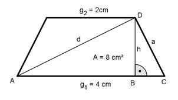

Aufgabe 92 Berechnen Sie die Höhe h, die Diagonale d und die Seite a des gleichschenkligen Trapezes.  g1 + g2 4 cm + 2 cm m = --------- = --------------- = 3 cm 2 2 A = m * h | :m A 8 cm2 h = ---- = -------- = 2,7 cm m 3 cm g1 - g2 4 cm – 2 cm BC = --------- = --------------- = 1 cm 2 2 Satz von Pythagoras im Dreieck BCD: a2 = h2 + BC2 = 2,72 + 12 = 7,3 + 1 = 8,3 |√ a = 2,9 cm Satz von Pythagoras im Dreieck ABD: d2 = (g1 – BC)2 + h2 d2 = (4 – 1)2 + 2,72 d2 = 9 + 7,3 = 16,3 |√ d = 4 cm